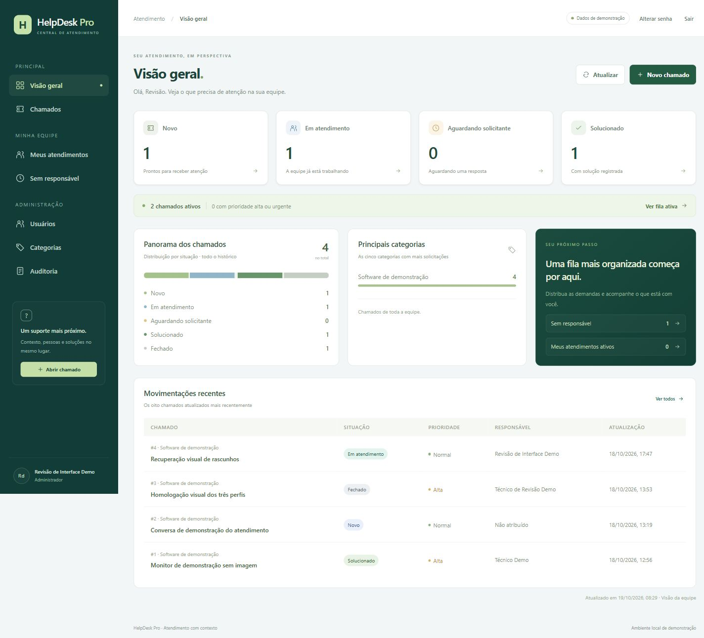

01 / Em destaque · React · TypeScript · Node.js
HelpDesk Pro — atendimento com contexto.
Sistema de chamados desenvolvido como estudo de uma aplicação corporativa. Reúne interface, API e banco de dados em um fluxo que vai da abertura ao fechamento do atendimento.
- Painel operacional, filtros de fila, atribuição, prioridades e acompanhamento por status.
- Perfis de solicitante, técnico e administrador, com permissões aplicadas no servidor.
- Comentários públicos, notas internas, histórico e auditoria das operações.
Vite · Fastify · PostgreSQL · Prisma · Monólito modular
MVP em homologação local · Dados fictícios
Engenharia, validação e disponibilidade
Sessões revogáveis, senhas com Argon2id, proteção CSRF, controle de concorrência e gravação transacional de histórico e auditoria. Em 19/10/2026, 81 cenários automatizados e a compilação foram aprovados, com validação também no GitHub Actions.
Backup e restauração lógica foram exercitados em banco temporário separado. O projeto ainda depende de infraestrutura, homologação e aprovação para eventual uso empresarial. Não está implantado em produção nem possui demonstração pública com login.
O código permanece em repositório privado. A apresentação pode ser solicitada por contato.